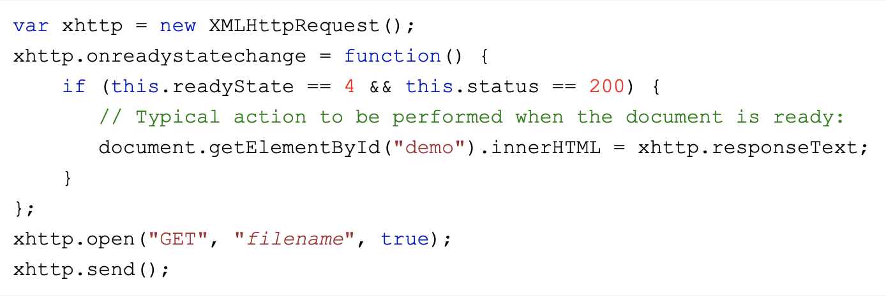
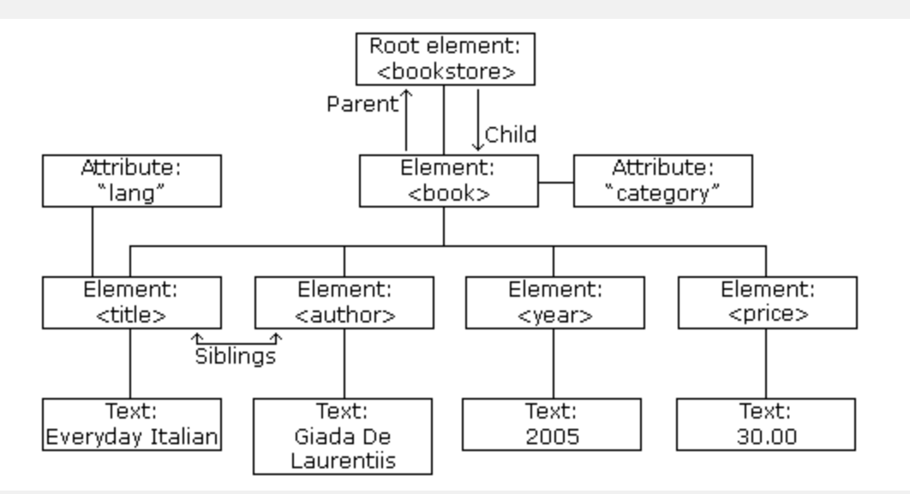
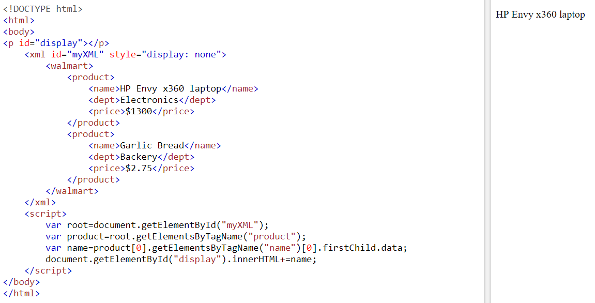
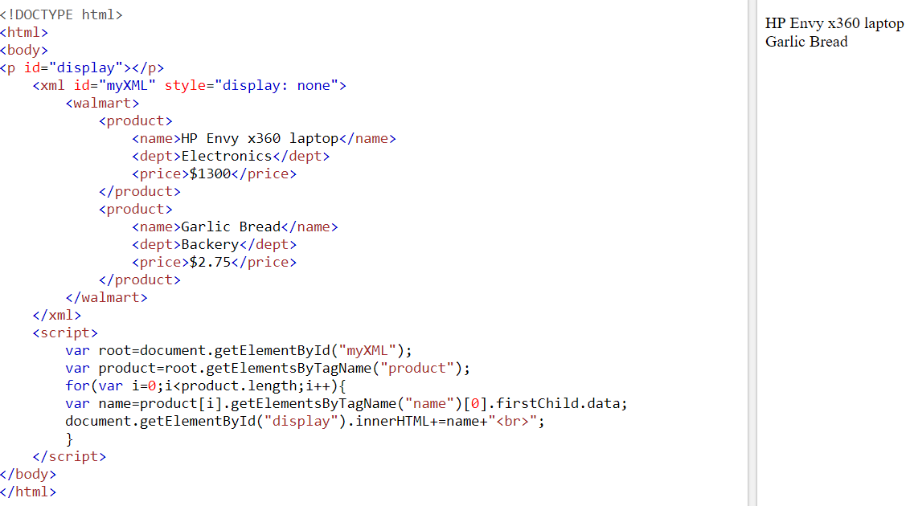

XML is extensible: It lets you define your own tags, the order in which they occur, and how they should be processed or displayed. Another way to think about extensibility is to consider that XML allows all of us to extend our notion of what a document is: it can be a file that lives on a file server, or it can be a transient piece of data that flows between two computer systems (as in the case of Web Services). Markup: The most recognizable feature of XML is its tags, or elements (to be more accurate). In fact, the elements you’ll create in XML will be very similar to the elements you’ve already been creating in your HTML documents. However, XML allows you to define your own set of tags. Language: Report Advertisement XML is a language that’s very similar to HTML. It’s much more flexible than HTML because it allows you to create your own custom tags. However, it’s important to realize that XML is not just a language. XML is a meta-language: a language that allows us to create or define other languages. For example, with XML we can create other languages, such as RSS, MathML (a mathematical markup language), and even tools like XSLT.
Concepts- XMLHttpRequest
The XMLHttpRequest object can be used to request data from a web server. The XMLHttpRequest object is a developers dream, because you can Update a web page without reloading the page. Request data from a server - after the page has loaded. Receive data from a server after the page has loaded and sending data to a server in the background
 - XML Tree Structure
XML documents are formed as element trees. An XML tree starts at a root element and branches from the root to child elements. All elements can have sub elements (child elements):

Using XML to exchange information offers many benefits. XML uses human, not computer, language. XML is readable and understandable, even by novices, and no more difficult to code than HTML.
- XML separates data from HTML:
- XML simplifies data sharing:
- XML simplifies data transport:
- XML simplifies Platform change:
- XML increases data availability:
- XML can be used to create new internet languages:
If you need to display dynamic data in your HTML document, it will take a lot of work to edit the HTML each time the data changes. With XML, data can be stored in separate XML files. This way you can focus on using HTML/CSS for display and layout, and be sure that changes in the underlying data will not require any changes to the HTML. With a few lines of JavaScript code, you can read an external XML file and update the data content of your web page.
In the real world, computer systems and databases contain data in incompatible formats. XML data is stored in plain text format. This provides a software- and hardware-independent way of storing data. This makes it much easier to create data that can be shared by different applications.
One of the most time-consuming challenges for developers is to exchange data between incompatible systems over the Internet. Exchanging data as XML greatly reduces this complexity, since the data can be read by different incompatible applications.
Upgrading to new systems (hardware or software platforms), is always time consuming. Large amounts of data must be converted and incompatible data is often lost. XML data is stored in text format. This makes it easier to expand or upgrade to new operating systems, new applications, or new browsers, without losing data.
Different applications can access your data, not only in HTML pages, but also from XML data sources. With XML, your data can be available to all kinds of "reading machines" (Handheld computers, voice machines, news feeds, etc), and make it more available for blind people, or people with other disabilities.
A lot of new Internet languages are created with XML. Here are some examples: XHTML, WSDL for describing available web services, WAP and WML as markup languages for handheld devices, RSS languages for news feeds, RDF and OWL for describing resources and ontology, SMIL for describing multimedia for the web.
XML document is less readable compared to other text-based data transmission formats such as JSON.
- Lack of Applications Processing:
- General Weaknesses of XML:
- Disadvantages for XML Documents:
XML needs an application processing system . There are no browsers yet which can read XML. In the case of HTML, anyone can write up a program and that can be read using any browser anywhere in the world. To be able to be read in a browser, XML still depends on HTML, and is not independent of it. The XML documents have to be converted to HTML before they are deployed.
Since XML is a verbose language, it is totally dependant on who is writing it. A verbose language may pose problems for other users. XML is not specific to any platform, and has a neutral platform requirement which may be a disadvantage in a few circumstances. All the standards of XML are not yet fully compliant. They are not fully recognized to be used yet. Users have reported problems with the parser and there are problems with XML and HTTP which are still being resolved.
XML documents can be difficult and also expensive to setup. A freelancer for example can sit at his home and at his own pace create, write and format a document or a manuscript using any of the free software available. However, the moment he introduces XML or starts with it, the whole process could get really painful to take the document further.
XML has a variety of uses for Web, e-business, and portable applications.
- Web publishing:
- Web searching and automating Web tasks:
- General applications:
- e-business applications:
- Pervasive computing:
XML allows you to create interactive pages, allows the customer to customize those pages, and makes creating e-commerce applications more intuitive. With XML, you store the data once and then render that content for different viewers or devices based on style sheet processing using an Extensible Style Language (XSL)/XSL Transformation (XSLT) processor.
XML defines the type of information contained in a document, making it easier to return useful results when searching the Web: For example, using HTML to search for books authored by Tom Brown is likely to return instances of the term 'brown' outside of the context of author. Using XML restricts the search to the correct context (for example, the information contained in the <anchor> tag) and returns only the information that you want. By using XML, Web agents and robots (programs that automate Web searches or other tasks) are more efficient and produce more useful results.
XML provides a standard method to access information, making it easier for applications and devices of all kinds to use, store, transmit, and display data.
XML implementations make electronic data interchange (EDI) more accessible for information interchange, business-to-business transactions, and business-to-consumer transactions.
XML provides portable and structured information types for display on pervasive (wireless) computing devices such as personal digital assistants (PDAs), cellular phones, and others. For example, WML (Wireless Markup Language) and VoiceXML are currently evolving standards for describing visual and speech-driven wireless device interfaces.
- Single element retrieval
- Multiple element retrieval
This program retrieval the name of the first product from the XML data
This program display the name of all the products in the XML data
